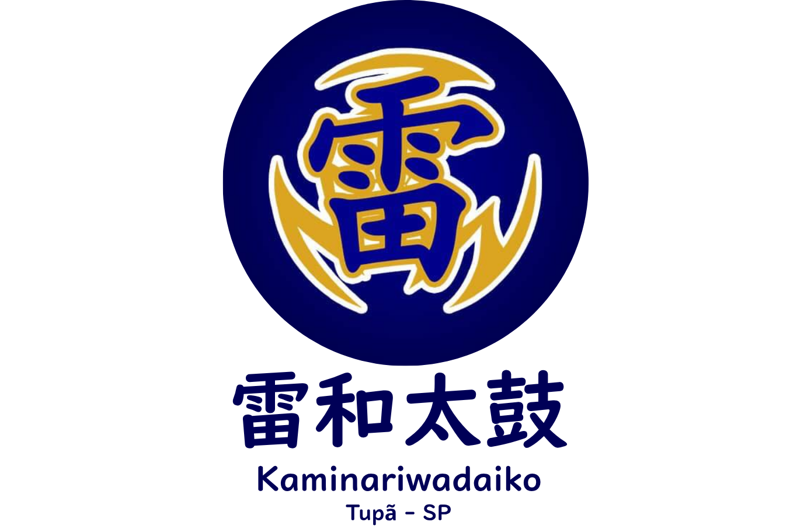
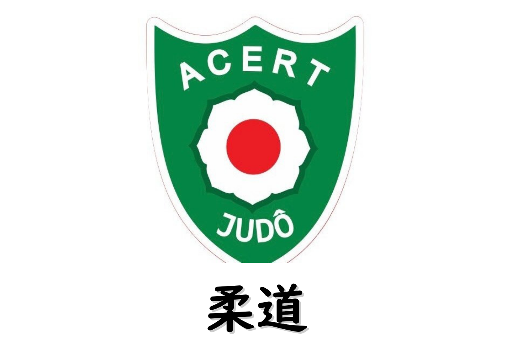
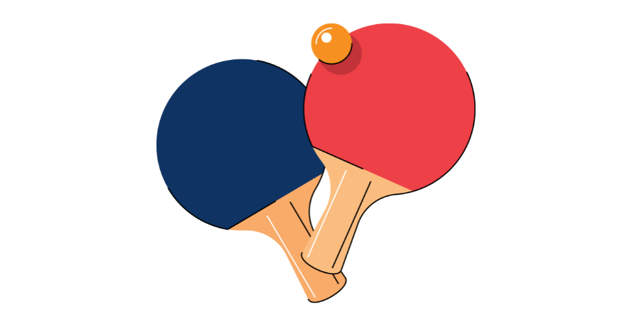
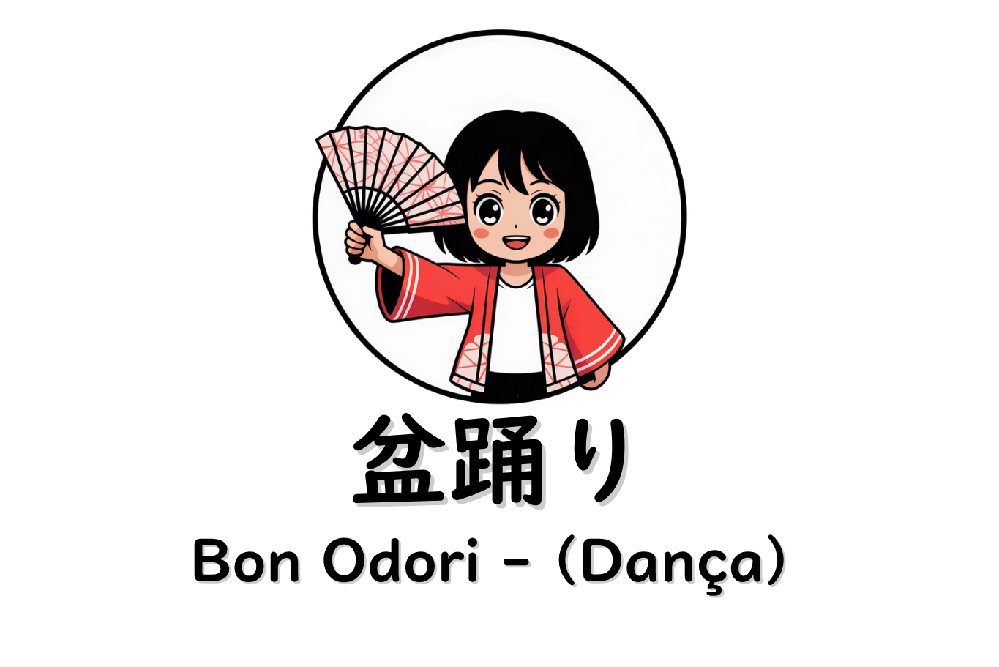
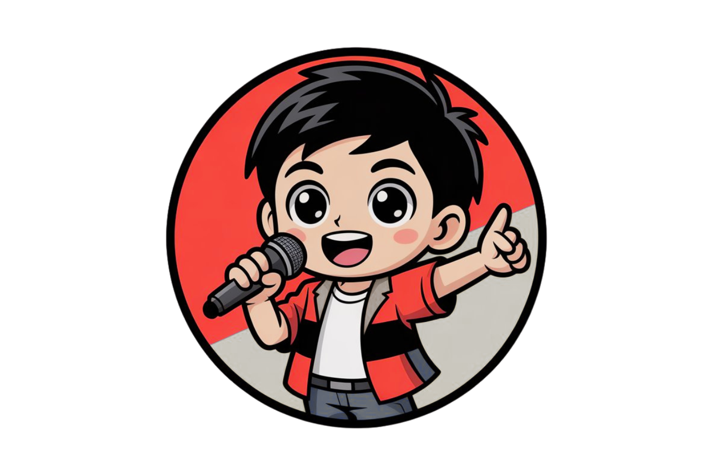

<!DOCTYPE html>
<html lang="pt-BR">
<head>
    <meta charset="UTF-8">
    <meta name="viewport" content="width=device-width, initial-scale=1.0">
    <title>Kaikaa da Cidade - Bem-vindos!</title>
    <link rel="stylesheet" href="css/style.css">
</head>
<script src="js/script.js"></script>
</body>
</html>

<header>
    <a href="#inicio" class="logo-link">
        
    </a>

    <button class="menu-hamburguer" id="menu-hamburguer">
        <span class="barra"></span>
        <span class="barra"></span>
        <span class="barra"></span>
    </button>

    <nav class="menu-principal" id="menu-principal">
        <ul>
            <li><a href="#inicio">Início</a></li>
            <li><a href="quemsomos.html">Quem Somos</a></li>
            <li><a href="#cursos">Departamentos</a></li>
            <li><a href="eventos.html">Eventos</a></li>
            <li><a href="#contato">Contato</a></li>
        </ul>
    </nav>
</header>
    

    <main>

        <section id="inicio">
    <div class="slider-fundo"></div>

    <div class="inicio-conteudo">
        <h1>Associação Cultural Esportiva e Recreativa de Tupã</h1>
        <p>Promovendo a cultura e a união da comunidade japonesa.</p>
    </div>
</section>

    <div class="section-divider">
        <h2>Departamentos</h2>
    </div>
    <section id="cursos">
    <div class="cursos-grid">

        <a href="linguajaponesa.html" class="curso-card">
            
            <h3>Língua Japonesa</h3>
        </a>

        <a href="taiko.html" class="curso-card">
            
            <h3>Taiko</h3>
        </a>

        <a href="baseball.html" class="curso-card">
            
            <h3>Baseball e Softball</h3>
        </a>

        <a href="judo.html" class="curso-card">
            
            <h3>Judô</h3>
        </a>

         <a href="tenisdemesa.html" class="curso-card">
            
            <h3>Tênis de Mesa</h3>
        </a>

        <a href="bonodori.html" class="curso-card">
            
            <h3>Bon Odori</h3>

        <a href="karaoke.html" class="curso-card">
            
            <h3>Karaoke</h3>

    </div>
</div>
</section>

<section id="quem-somos">
    <div class="quem-somos-container">

        <div class="quem-somos-texto">
            
            <h2>Quem Somos</h2>
            <p>
                Fundada em 1956, a nossa associação tem sido um pilar da comunidade nipo-brasileira, 
                preservando nossas tradições e promovendo a integração cultural através de eventos, 
                cursos e atividades para todas as idades.
            </p>
            <a href="quemsomos.html" class="botao">Saiba Mais</a>
        </div>

        <div class="quem-somos-imagem">
            
        </div>

    </div>
</section>


</section>

        <section id="parceiros">
            <h2>Parceiros e Colaboradores</h2>
            <p>Agradecemos o apoio fundamental de nossos parceiros.</p>
            
            
            
        </section>

<section id="contato">
    <div class="contato-container">

        <div class="contato-info">
            <h2>Entre em Contato</h2>
            <p class="contato-subtitulo">
                Adoraríamos receber sua visita ou mensagem. Veja como nos encontrar.
            </p>
            
            <div class="info-item">
                <span class="icone">📍</span>
                <div>
                    <strong>Endereço</strong>
                    <p>R. Juntaro Mizushima, 0045 - Tupã, SP, 17601-500</p>
                </div>
            </div>

            <div class="info-item">
                <span class="icone">📞</span>
                <div>
                    <strong>Telefone</strong>
                    <p>(14) 3496-2543</p>
                </div>
            </div>

            <div class="info-item">
                <span class="icone">✉️</span>
                <div>
                    <strong>Email</strong>
                    <p><a href="mailto:acertupa@gmail.com.br">acertupa@gmail.com.br</a></p>
                </div>
            </div>
        </div>

        <div class="contato-mapa">
            <iframe 
                src="https://maps.google.com/maps?q=R.%20Juntaro%20Mizushima%2C%200045%20-%20Tupã%2C%20SP%2C%2017601-500&t=&z=15&ie=UTF8&iwloc=&output=embed" 
                width="100%" 
                height="100%" 
                style="border:0;" 
                allowfullscreen="" 
                loading="lazy" 
                referrerpolicy="no-referrer-when-downgrade">
            </iframe>
        </div>

    </div>
</section>


    </main>

    <footer>
        <p>&copy; 2025 Kaikan da Cidade. Todos os direitos reservados.</p>
    </footer>

</body>
</html>